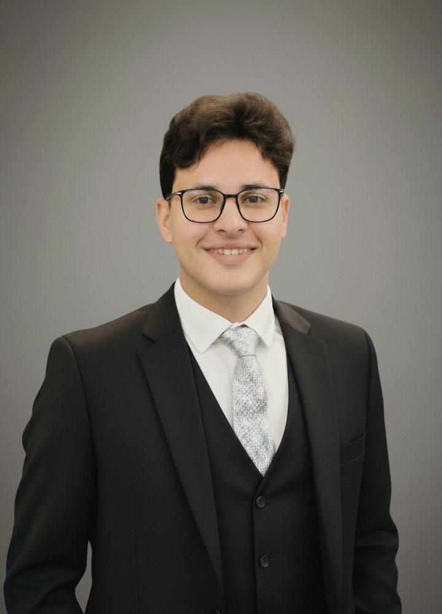

Ahmed Mostafa Hussein
I focus on detecting threats, investigating alerts and responding to incidents, backed by hands-on SIEM, endpoint and network defense training.
I'm looking to join a SOC team where I can turn alerts into clear, documented decisions.

The SOC I built from scratch
A small enterprise on one workstation, with a Windows domain, a firewall and a Splunk SIEM, then attacked on purpose. Every alert in it fired because I ran the attack, so nothing is theoretical.
Detection engineering
Ten custom SPL detections in Splunk, each validated against the real attack that triggered it.
Threat hunting
Four manual hunts for what alerts can miss: PowerShell obfuscation, LOLBins, off-hours logons and lateral movement. One hunt surfaced a data-integrity issue, which I investigated and confirmed was isolated.
SOAR with a human in the loop
A Shuffle playbook enriches each alert with VirusTotal and AbuseIPDB, asks me on Telegram to block or ignore, and pushes approved blocks to pfSense through its API.
Hybrid cloud monitoring
An Azure Ubuntu VM sends its SSH logs to Splunk through a secure tunnel, with a detection that tells brute force from password spraying.
MITRE ATT&CK coverage10 detections, each mapped to a technique10
- Port Scan Detected (pfSense)Discovery: Network Service DiscoveryT1046
- Brute Force: Multiple Failed Logons (Windows)Credential Access: Password GuessingT1110.001
- SSH Brute Force Detected (Linux and Azure)Credential Access: Password GuessingT1110.001
- Kerberoasting Detected (Event 4769)Credential Access: KerberoastingT1558.003
- Credential Dumping: LSASS Access (Sysmon 10)Credential Access: LSASS MemoryT1003.001
- Suspicious Scheduled Task Created (Event 4698)Persistence: Scheduled TaskT1053.005
- Registry Persistence: Run Key ModifiedPersistence: Registry Run KeysT1547.001
- Privileged Group Membership ChangePersistence and Privilege Escalation: Account ManipulationT1098
- RDP Logon Detected (Event 4624, Type 10)Lateral Movement: Remote Desktop ProtocolT1021.001
- Log Clearing Detected (Event 1102)Defense Evasion: Clear Windows Event LogsT1070.001
- Splunk
- Sysmon
- Active Directory
- pfSense
- Microsoft Azure
- Shuffle SOAR
- Docker
- Kali Linux
- Hydra
- Nmap
- MITRE ATT&CK
- VirusTotal
The lab that defends itself
A second lab, built to answer a different question: how far can a network get without a person reading every alert?
I built an enterprise-style network in GNS3 and VMware, attacked it with the same tools real intruders use, and connected the detection straight to the firewall.
Four layers watch the same traffic: a machine learning model, Suricata, Zeek, and rule-based checks. A three-tier confidence framework decides how far to escalate. When the evidence is strong enough, a script tells pfSense to block the attacker over SSH.
The training data is mine too. I captured and labeled it from live attacks instead of downloading a dataset.
How it was tested: the classifier was evaluated on 8 attack categories, and the full system faced 240 live attacks in my own lab network, using real attack tools.
- Python
- XGBoost
- Scikit-learn
- Scapy
- Suricata
- Zeek
- pfSense
- GNS3
- VMware
- Cisco IOS
How I work
The loop I follow with every alert, from the first signal to the lessons afterward.
Detect
Watch traffic and alerts across several layers, such as SIEM, IDS and network logs, instead of trusting one signal.
Investigate
Trace an alert back to its source through packet captures, firewall logs and endpoint evidence, then decide if it is real.
Respond
Contain the threat fast and measure how long it takes. In my machine learning lab, an attacker is blocked in under a second.
Improve
Document what happened and tune the defenses, so the next alert is faster to handle.
How I got here
I started with networking, moved into security, and then into SOC work.
- 2022
Started my B.Sc. in Computer Science at Modern Academy, Cairo.
- 2023
Learned networking first: CCNA training at IT Gate Academy, with VLANs, OSPF and Packet Tracer labs.
- 2024
Moved into security with a firewall internship at IT Gate Academy: Fortinet and Sophos policies, NAT rules and VPN tunnels, plus firewall log reviews to spot unauthorized access.
- 2025
Added structured training: Google Cybersecurity, IBM ethical hacking, and Cisco security credentials.
- 2026
Graduated in Computer Science and completed hands-on training in SOC operations and threat investigation.
Toolbox, by job
Grouped by what I use each tool for.
Watch
- SIEM
- Splunk
- Sysmon
- IDS
- Suricata
- Zeek
Investigate
- Wireshark
- Firewall logs
- Endpoint forensics
- Threat hunting
Test
- Kali Linux
- Metasploit
- OpenVAS
- Nmap
- Hydra
Defend
- Fortinet
- Sophos
- pfSense
Automate
- Python
- Scapy
- SQL
- Linux
- Shuffle SOAR
Credentials
15 certificates, each with a link to check it. Open a group to see them.
SOC and blue team 7
- SIEM Engineer Career PathLetsDefendAug 2026Verify
- SOC Analyst Learning PathLetsDefendAug 2026Verify
- Cybersecurity Defense Analyst Career PathCisco Networking AcademyMay 2026Verify
- Advanced Endpoint InvestigationsTryHackMeApr 2026Verify
- SOC Level 2TryHackMeApr 2026Verify
- SOC Level 1TryHackMeApr 2026Verify
- Junior Cybersecurity Analyst Career PathCisco Networking AcademyOct 2025Verify
Cisco defense 3
Ethical hacking 2
AI security 1
- AI Security Mastery: From Attacks to DefensesMahara TechMar 2026View
Beyond security
Selected work from my GitHub across networking, machine learning, embedded systems and software.
Networking foundations 3
- Network-Multi-Protocol-RoutingThree routing protocols (OSPF, RIP, EIGRP) working together through redistribution.
- Campus-Network-EtherChannelDepartment VLANs, redundant EtherChannel links and port security.
- Wireless-Campus-NetworkA multi-floor wireless design with WPA2 and one SSID per floor.
Machine learning 3
- ML-California-Housing-ComparisonSix algorithms written from scratch, then benchmarked against scikit-learn.
- NLP-Text-SummarizationTF-IDF summaries of CNN/Daily Mail articles.
- Speech-Processing-Emotion-TranscriptionWav2Vec2 transcription plus emotion recognition with MFCC features and an SVM.
Embedded systems & software 5
- IoT-Wifi-RC-CarA WiFi and Bluetooth controlled car that senses obstacles.
- Embedded-Arduino-ProjectA smart door with an ultrasonic sensor, a servo, and WiFi through an ESP8266.
- Banking-App-FlutterA cross-platform mobile banking interface built with Flutter.
- Airline-Reservation-SystemA Java Swing app backed by a SQL database.
- Bird-Game-UnityA Flappy Bird-style 2D game in Unity and C#.
Let's talk
I'm open to work as an entry-level SOC Analyst. Email is the best way to reach me.
Languages: Arabic (native), English (proficient).